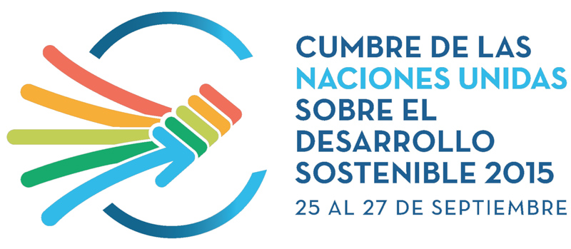
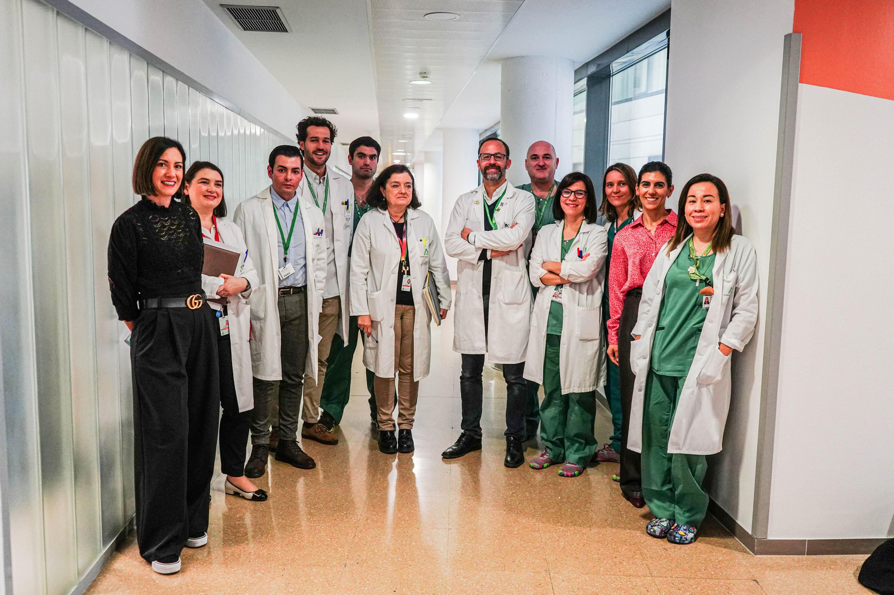
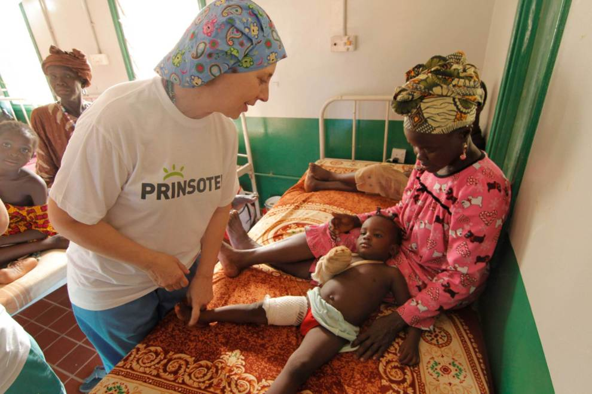

Acerca de ODS 3
El ODS 3 fue adoptado como parte de los 17 Objetivos de Desarrollo Sostenible en la Cumbre de las Naciones Unidas para el Desarrollo Sostenible en 2015. Estos objetivos buscan abordar los desafíos globales, incluidas la pobreza, la desigualdad, el cambio climático, la degradación ambiental, la paz y la justicia.

El ODS 3 tiene metas específicas, como:
- Reducir la tasa mundial de mortalidad materna a menos de 70 por cada 100,000 nacidos vivos.
- Poner fin a las epidemias de SIDA, tuberculosis, malaria y enfermedades tropicales desatendidas.
- Reducir las muertes y lesiones causadas por accidentes de tráfico.
Además, el ODS 3 aborda la salud reproductiva, la atención sanitaria de calidad, y la cobertura sanitaria universal. Estas metas son fundamentales para el bienestar de todas las personas y para la construcción de sociedades inclusivas y sostenibles.

Avances y Desafíos
Hemos logrado grandes avances en la lucha contra varias de las principales causas de muerte y enfermedades. La esperanza de vida ha aumentado drásticamente, las tasas de mortalidad infantil y materna han disminuido, hemos cambiado el curso del VIH y la mortalidad por la malaria se ha reducido a la mitad.
La buena salud es esencial para el desarrollo sostenible y la Agenda 2030 refleja la complejidad y la interconexión de ambos. Toma en cuenta la ampliación de las desigualdades económicas y sociales, la rápida urbanización, las amenazas para el clima y el medio ambiente, la lucha continua contra el VIH y otras enfermedades infecciosas, y los nuevos problemas de salud, como las enfermedades no transmisibles. La cobertura universal de salud será integral para lograr el ODS 3, terminar con la pobreza y reducir las desigualdades. Las prioridades de salud global emergentes que no se incluyen explícitamente en los ODS, incluida la resistencia a los antimicrobianos, también demandan acción.
Sin embargo, el mundo no está bien encaminado para alcanzar los ODS relacionados con la salud. El progreso ha sido desigual, tanto entre países como dentro de ellos. Sigue habiendo una discrepancia de 31 años entre los países con la esperanza de vida más corta y la más larga. Si bien algunos han logrado avances impresionantes, los promedios nacionales ocultan el hecho de que algunas poblaciones, grupos y comunidades se están quedando atrás. Los enfoques multisectoriales, basados en los derechos y con perspectiva de género, son esenciales para abordar las desigualdades y asegurar una buena salud para todas las personas.
